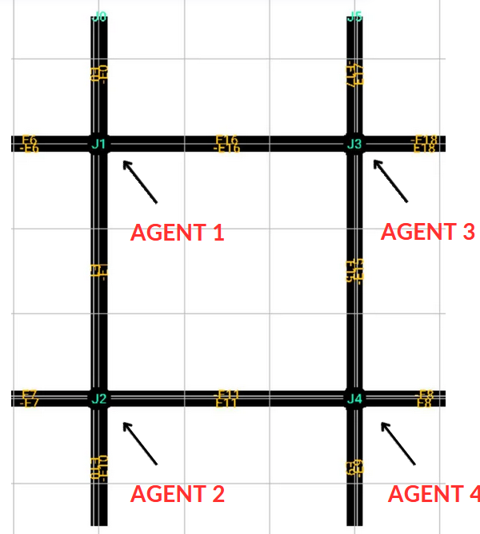
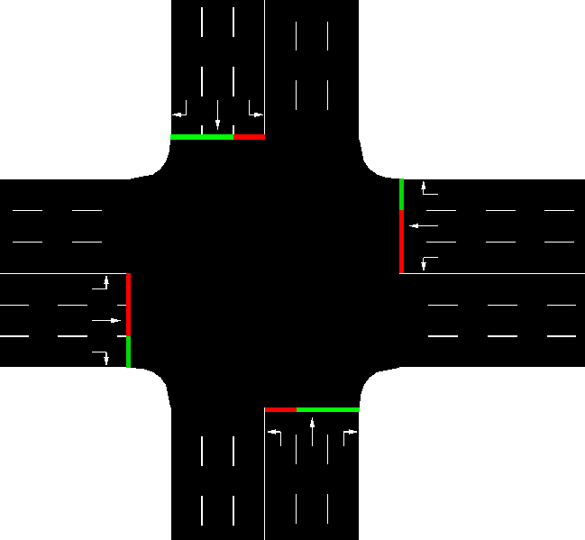
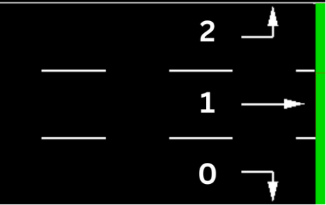
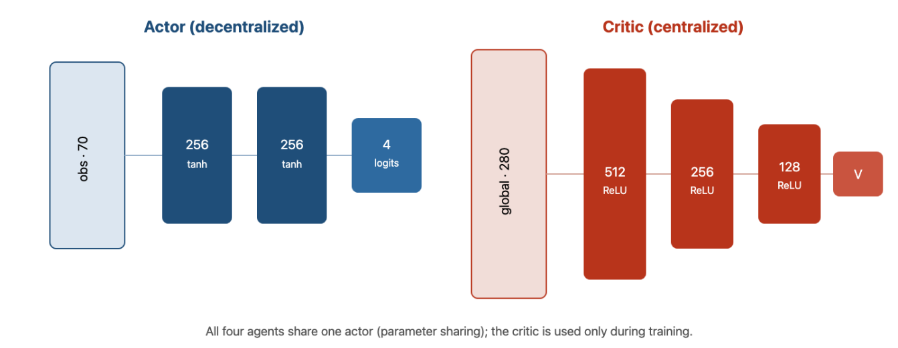
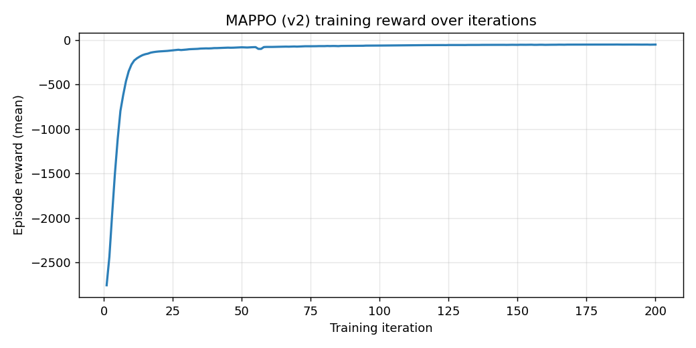
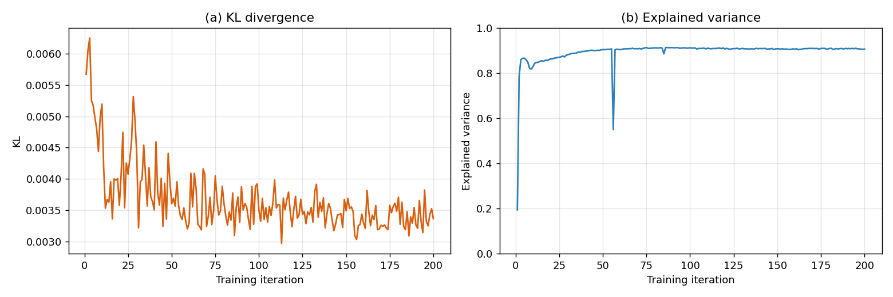
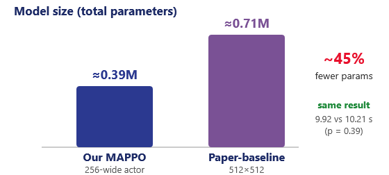
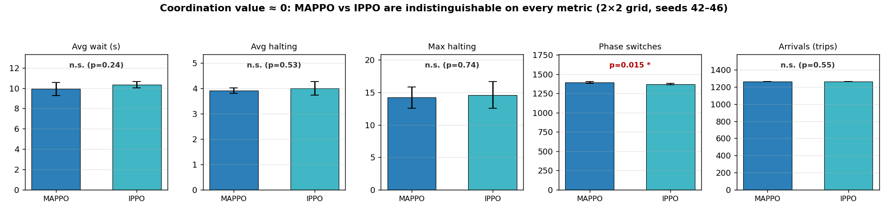

Emergent Social Behaviour &
Dilemmas in Multi-Agent
Reinforcement Learning
Agenda
Overview
Introduction
Background & Motivation
- Multi-agent systems are everywhere — traffic, power grids, robotics, markets, ecosystems.
- Reinforcement learning lets agents learn by interaction, with no labelled dataset.
- When many learning agents interact, social behaviour emerges on its own.
- That emergence can be beneficial (cooperation) or catastrophic (mutual interference, gridlock, resource collapse).

Problem Statement
Research Objectives
Four concrete questions, each answered later by an experiment:
- Q1. Does a learned MARL controller beat the heuristic baselines under a fair comparison?
- Q2. Does dropping coordination — independent IPPO — actually degrade performance vs MAPPO?
- Q3. Is the value of coordination a function of network scale?
- Q4. Is our compact MAPPO enough, or does it need the larger published recipe?
Primary environment
Traffic signal control — an inherently cooperative setting that sits at the pure-coordination end of the spectrum, giving a clean baseline for measuring coordination.
Theoretical Framework
Reinforcement Learning
- The agent observes a state and chooses an action.
- The environment responds with a new state and a reward.
- The agent's goal: a policy that maximizes long-run cumulative reward.
- No dataset — learning comes entirely from this interaction loop.
Theoretical Framework
Multi-Agent RL
- Non-stationarity. Each agent treats the others as part of the environment — but they are also learning, so the environment keeps shifting.
- This breaks the Markov assumption and makes naive learning unstable.
- Credit assignment. With a shared outcome, which agent earned the reward?
- Agents may free-ride on others' effort.
Theoretical Framework
Social Dilemmas
A social dilemma: individually rational choices lead to a collectively worse outcome. Classic example — the Prisoner's Dilemma: defecting pays off short-term, but mutual cooperation is better if both cooperate.
| B cooperates | B defects | |
|---|---|---|
| A cooperates | Both: 2 yrs | A: 5 · B: 0 |
| A defects | A: 0 · B: 5 | Both: 4 yrs |
incentives alignedSocial dilemma
defection tempting
Traffic sits at the pure-coordination end: there is nothing to gain by defecting — the perfect zero-point to measure the value of coordination.
Methodology
Environment
- 2×2 grid, 4 intersections — one agent per intersection — in SUMO via TraCI + Ray RLlib.
- 150 m inner roads, 100 m entries; 3 lanes each.
- Episode = 3600 s, decisions every 5 s (≤720 per agent).
- Realistic demand: light → rush hour → light.
Methodology
Intersection & Action Design

- 12 lanes per intersection with strict directions: lane 0 right, lane 1 straight, lane 2 left.
- Strict assignment makes the environment cleaner, so agents learn faster.

4 actions per agent
a₁ · NS straight
a₂ · EW straight
a₃ · EW left
a₄ · NS left
Right turns permissive in all phases; 3 s all-red safety clearance on every switch.
Methodology
Algorithm — MAPPO & Why
- MAPPO = Multi-Agent PPO. A centralized critic sees the global state during training to tame non-stationarity.
- It also addresses credit assignment — disentangling each agent's contribution to the shared reward.
- CTDE: centralized critic only at training; decentralized actors at deployment (each uses local obs).
- Shared policy — agents are homogeneous, so one network is reused across all four (efficient, more data per update).

Methodology
Observations & Reward
γₛ = 0.9 spatial discount
70
dimensions / agent
28 local + 42 neighbour features. Spatial discounting weights nearer intersections more.
Five-component reward (config v2):
- W waiting time · Q queue · T throughput (shared)
- P local pressure · N neighbour pressure — the only explicit coordination term.
Methodology
Comparators & Fair Protocol
| Design choice | MAPPO | IPPO |
|---|---|---|
| Critic | Centralized (280) | Decentralized (70) |
| Neighbour reward N | active (−0.4) | off (0.0) |
| Actor / hyperparams | identical | |
| Parameter sharing | identical | |
MAPPO & IPPO differ only in the two choices that define "cooperative" vs "independent." Plus a paper-baseline (Yu 2021, 512×512) as a fidelity check.
- Metrics: avg waiting time, halting, completed trips, phase switches.
- Evaluated over 5 seeds (42–46); differences tested with Welch's t-test.
Results & Narrative · 1 of 5
MAPPO Trains Stably


Results & Narrative · 2 of 5
Beating the Heuristics — Fairly

- Under matched clearance: MAPPO 9.92 s beats Max-Pressure (21.6 s, ~2×) and Fixed-Time (47.0 s, ~5×).
Results & Narrative · 3 of 5
Not a Strawman

- Our compact MAPPO (256-wide actor) vs the published recipe (Yu 2021, 512×512).
- Avg wait 9.92 s vs 10.21 s — statistically tied (p = 0.39).
- Same result with ~45% fewer parameters: our implementation is faithful and competitive.
Results & Narrative · 4 of 5 · the central result
The Twist: Coordination Value ≈ 0

MAPPO ≈ IPPO on every performance metric.
- Wait p=0.24 · halting p=0.53 · max halt p=0.74 · trips p=0.55 — all n.s.
- Only difference: MAPPO does +21 phase switches (p=0.015) — no performance benefit.
Results & Narrative · 5 of 5
Seeing It Run

assets/mappo_vs_fixed.gif
mappo_vs_fixed.gif shows both side-by-side)
Discussion
Why Coordination Value ≈ 0
- The network is small. On a 2×2 grid, minimizing your own queue is almost the same as minimizing the network's — incentives are already aligned.
- So coordination is emergent, not engineered: independent learners with shared parameters rediscover it on their own.
- Not that the task is trivial — both learners crush the heuristics. It's the coordination-specific machinery that's redundant here.
- Scale hypothesis. As the grid grows, agents interact through longer chains → the gap should widen (CoLight; Chu 2020).
value ≈ 0 (here)5×5 / city
value expected > 0
Challenges Faced
- Compute. A single RTX 3060 Ti; each run is ~2 days. Scaling to a 5×5 grid (25 agents) was prototyped then reverted — training to convergence exceeded the budget.
- Faithful evaluation. Matching train/eval safety clearance, restoring the observation normalizer, and forwarding neighbour metadata — each silently breaks results if missed.
- Simulator integration. SUMO + TraCI + RLlib with per-worker ports and deterministic seeding.

assets/city_5x5.png
Future Work
Conclusion
- A MAPPO traffic controller trains stably and, under a fair, matched-clearance test, beats fixed-time (~5×) and max-pressure (~2×).
- It is a faithful implementation — on par with the published recipe at ~45% the size.
- Central result: against an identical IPPO it is statistically indistinguishable — on a 2×2 network the coordination value ≈ 0.
- This is a careful negative result + a sharpened hypothesis: the value of cooperation is not a fixed property of an algorithm — it is a function of scale.
Student ID: 214647
June 2026